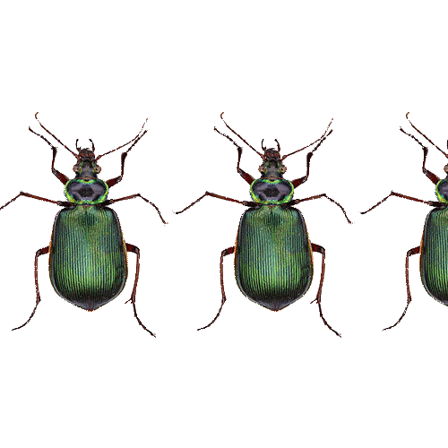

My work here is consistent with three types of bugs that I would call my favorites. I wanted to make it seem like each bug was moving across your screen. Of course, they move slow and unnatural because of the nature of their position. I think it adds a creepiness to the concept that they are not all moving the in the direction you think they would.